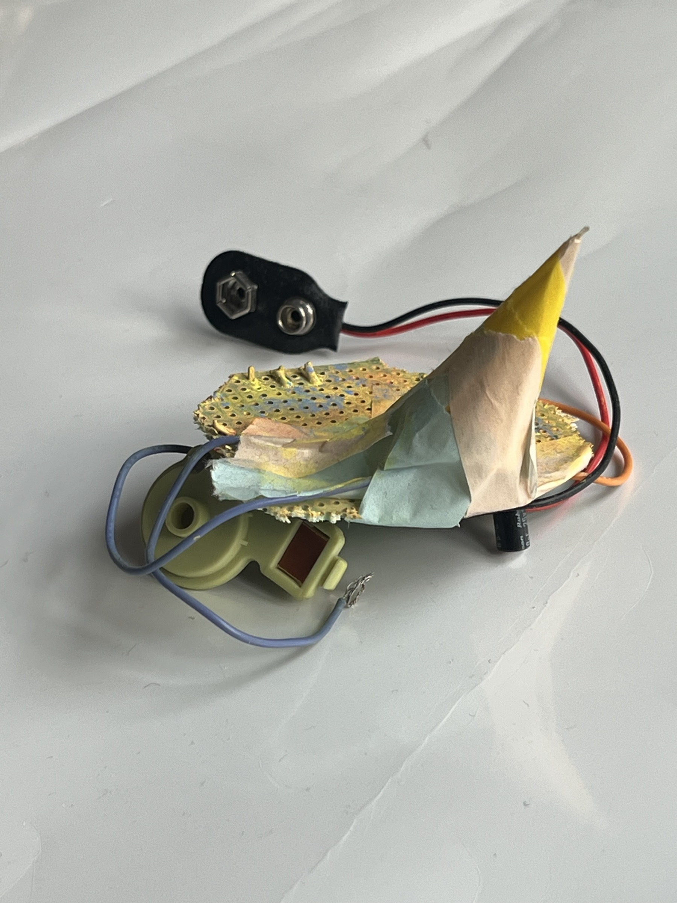
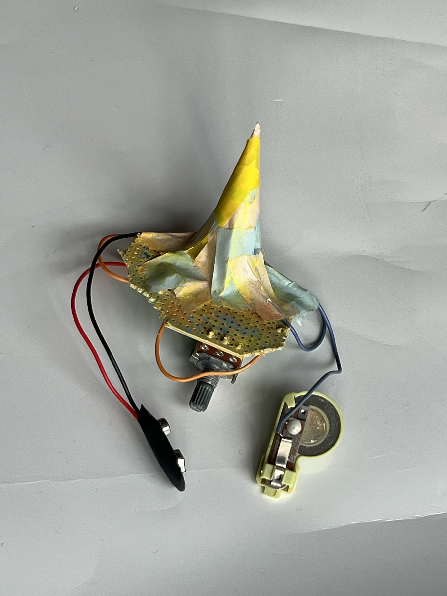

End of the Party
This is a minimal test page for a future project that needs more space than the homepage.
Use this page to evaluate whether a separate project window feels right for longer writing, additional images, process notes, or documentation. The layout stays simple so the hierarchy is visible without changing the current homepage structure.

